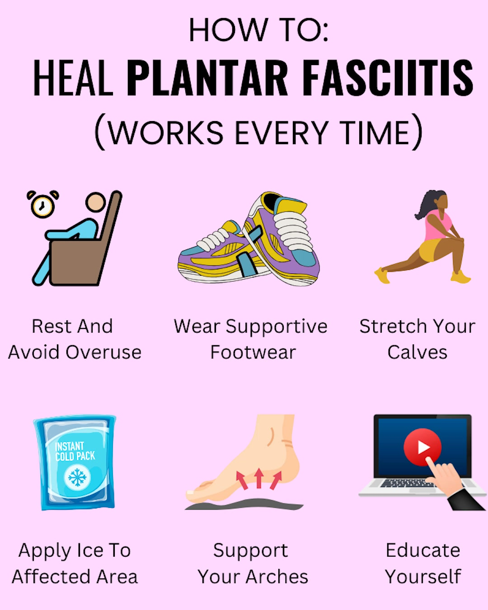
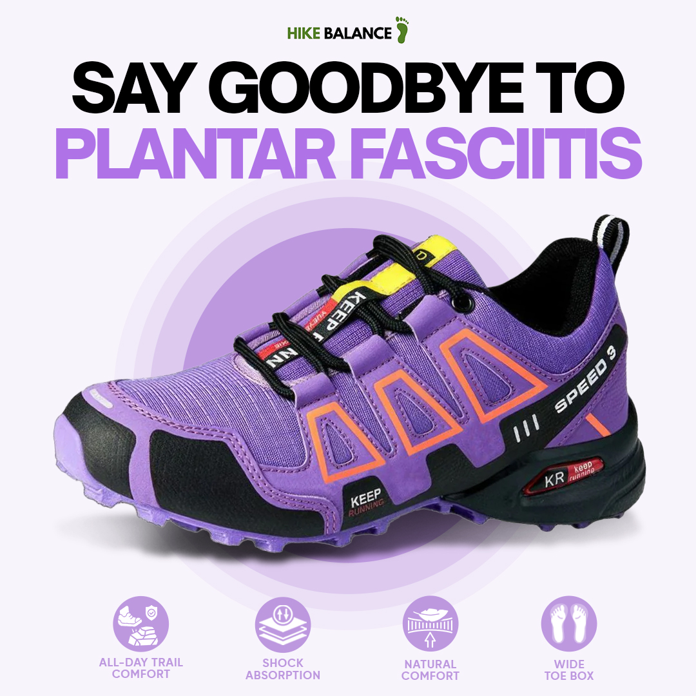
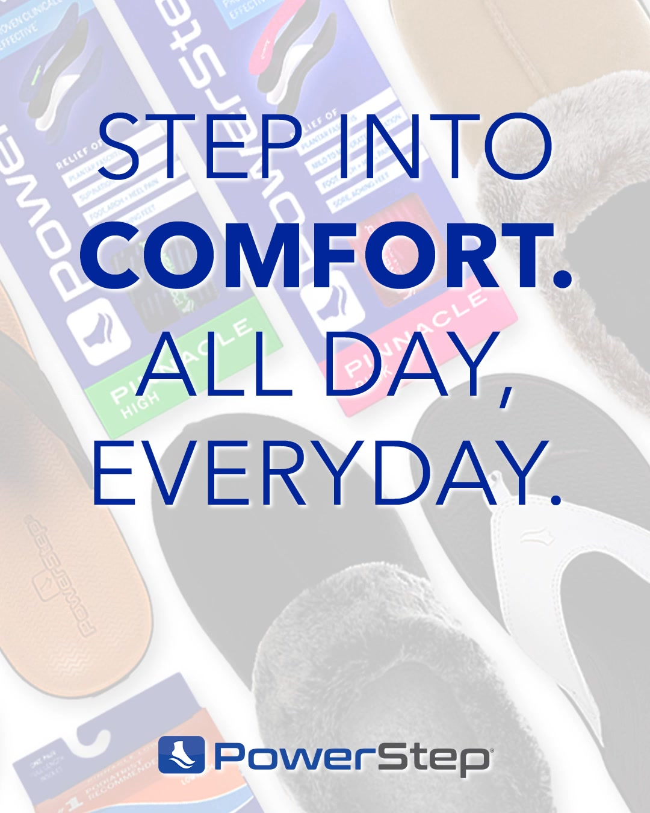
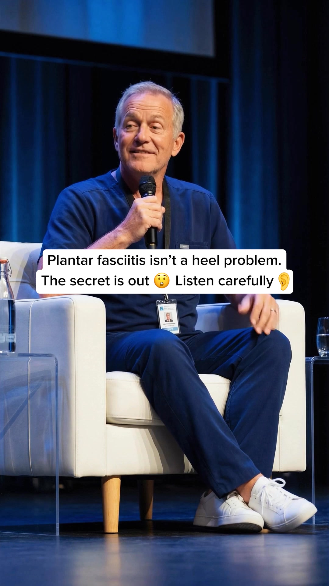
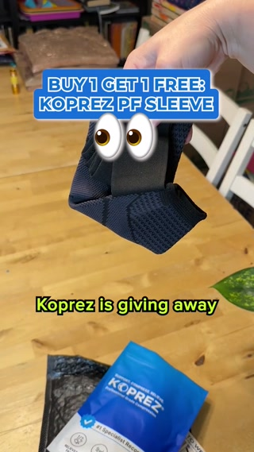
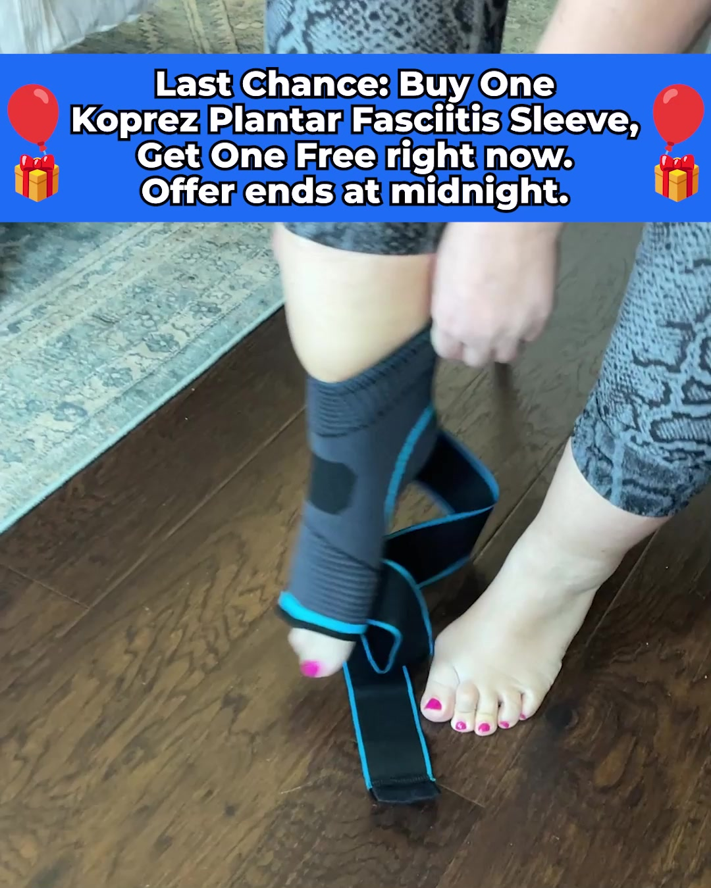
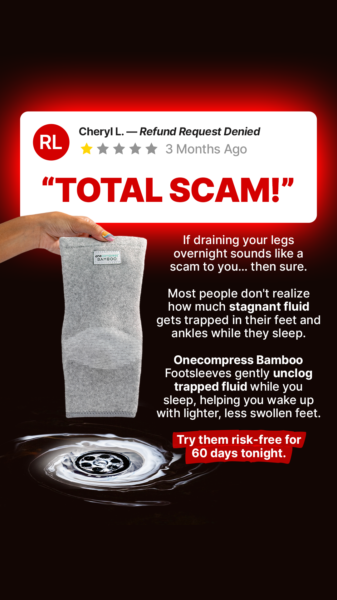
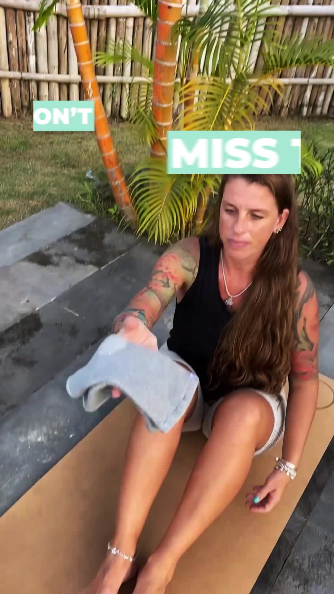

Escala sustentada (60+ dias no ar) = oferta validada: copie a oferta. Rajada (Stepprs, 50 anúncios em 2,4 h) = método de teste: copie o método, não a oferta.
02Ângulos que se repetem
ângulo
Mecanismo novo: "não é inflamação, é desgaste"
Explica por que gelo e alongamento não resolvem e apresenta a luva como o que faltava.
prova: Koprez, 192 dias no ar, 912 anúncios ativos
ângulo
"Não é meia de compressão"
Quebra a objeção nº1 do nicho (aperta, esquenta, tira antes de dormir) e posiciona o uso noturno.
prova: One Compress, 184 dias no ar, 9.921 reviews verificados
ângulo
Turno de 12 horas sem dor
Avatar de quem trabalha em pé, com depoimento em 1ª pessoa e garantia forte.
prova: Stepprs, 435 dias no ar
ângulo
"$40 contra $400/$1.000 da palmilha sob medida"
Ancora o preço contra a solução cara que o cliente já cotou.
prova: Xstance (marca, 524 dias) e OrthoFlexx (996 ativos)
ângulo
Fisioterapeuta explica (advertorial)
Página-jornal com autoridade emprestada antes da loja.
prova: Koprez "Foot Health Digest", 170 a 180 dias
ângulo
Proteção: pais comprando pro filho
Avatar de quem paga ≠ quem usa. Teste futuro, não ponto de partida.
prova: Footstr, 130 dias, hoje desacelerando
03Galeria dos 10 criativos mais escalados do mercado

VÍDEO
#1 · The Xstance
Stand All Day Effortlessly
Take a moment for yourself today. Enjoy a long walk and let your feet breathe. But, do you know what makes these cherished moments even better? It's the comfort…
no ar há 524 dias · 2 variação(ões)
ativo
Prova do anúncio
The Xstance
Take a moment for yourself today. Enjoy a long walk and let your feet breathe. But, do you know what makes these cherished moments even better? It's the comfort and support of your feet. 🦶 Frequent walking without proper support can cause foot-, joint- or even back problems. 🏥 Arch support and proper cushioning help to lower the risk of serious conditions. 💸 The problem is: high quality shoes, or custom orthotics are ridiculously expensive. ✅ Now there’s an affordable & effective way to help reduce health risks of frequent walking. 👟 These state-of-the-art insoles for people who stand or w
VÍDEO (capa = prévia da Meta; vídeo completo em criativos/533238433000641.mp4)
Destino
https://getxstance.com/article/5-reasons
Gasto e impressões
não obtidoa Meta não publica gasto de e-commerce fora da UE
O que isso prova
Que o anúncio está no ar há 524 dias e a página segue investindo nesse ângulo.
O que isso não prova
Gasto, faturamento ou lucro.

ESTÁTICO
#2 · Foot Relief Journal
7 Reasons How These Shoes are Helping Hikers Relieve Foot Pain
Plantar Fasciitis pain shouldn't hold you back! 👣 Experience pain-free walks again with Hike Balance! Orthopedist-approved comfort that works with your feet, n…
no ar há 509 dias · 1 variação(ões)
ativo
Prova do anúncio
Foot Relief Journal
Plantar Fasciitis pain shouldn't hold you back! 👣 Experience pain-free walks again with Hike Balance! Orthopedist-approved comfort that works with your feet, not against them! 😌 Premium Support Technology - Don't let nerve pain stop you from enjoying life Join thousands already walking pain-free! 👉 https://try.hikebalance.com/hike-balance/pre-us
não obtidoa Meta não publica gasto de e-commerce fora da UE
O que isso prova
Que o anúncio está no ar há 509 dias e a página segue investindo nesse ângulo.
O que isso não prova
Gasto, faturamento ou lucro.
VÍDEO
#3 · Stepprs
Walk on Clouds, Or It’s FREE.
"I’ve tried so many insoles for my plantar fasciitis, nothing ever really helped… until I found Stepprs. Within a few days, the stabbing heel pain I usually fe…
no ar há 435 dias · 4 variação(ões)
ativo
Prova do anúncio
Stepprs
"I’ve tried so many insoles for my plantar fasciitis, nothing ever really helped… until I found Stepprs. Within a few days, the stabbing heel pain I usually feel in the morning was nearly gone. I wear them in my work boots for 10-hour shifts, and for the first time in years, I don’t come home with aching feet. These insoles are a game-changer!", Michelle, Verified Customer ✅ Cushioning ✅ Breathable ✅ Arch Support ✅ Instant Relief
não obtidoa Meta não publica gasto de e-commerce fora da UE
O que isso prova
Que o anúncio está no ar há 435 dias e a página segue investindo nesse ângulo.
O que isso não prova
Gasto, faturamento ou lucro.
VÍDEO
#4 · Stepprs
Your Feet Deserve Better!
Say Goodbye to Foot Pain & Hello to ALL-DAY Comfort 🧡 ✅ "Reduces strain on the foot", Dr. Thomas ✅ Support Your Overall Foot Health ✅ 100,000+ Happy Customers…
no ar há 435 dias · 3 variação(ões)
ativo
Prova do anúncio
Stepprs
Say Goodbye to Foot Pain & Hello to ALL-DAY Comfort 🧡 ✅ "Reduces strain on the foot", Dr. Thomas ✅ Support Your Overall Foot Health ✅ 100,000+ Happy Customers ❌ Avoid Counterfeits
VÍDEO (capa = prévia da Meta; vídeo completo em criativos/24395723966734985.mp4)
Destino
https://stepprs.com/pages/review-3
Gasto e impressões
não obtidoa Meta não publica gasto de e-commerce fora da UE
O que isso prova
Que o anúncio está no ar há 435 dias e a página segue investindo nesse ângulo.
O que isso não prova
Gasto, faturamento ou lucro.

VÍDEO
#5 · PowerStep
Stay Supported with Every Step
Multiple insoles - same support! Whether you need insoles for low-profile shoes, sports shoes, or anything in between, PowerStep has options to ensure you stay …
no ar há 384 dias · 1 variação(ões)
ativo
Prova do anúncio
PowerStep
Multiple insoles - same support! Whether you need insoles for low-profile shoes, sports shoes, or anything in between, PowerStep has options to ensure you stay supported. ➜ #1 Podiatrist Recommended Orthotic Insole ➜ Reduce pain from Plantar Fasciitis, tendonitis, arch & heel pain, and more ➜ Free shipping on all $35+ orders ➜ 100,000+ 5-star reviews
VÍDEO (capa = prévia da Meta; vídeo completo em criativos/1490885148764936.mp4)
Destino
http://powerstep.com/
Gasto e impressões
não obtidoa Meta não publica gasto de e-commerce fora da UE
O que isso prova
Que o anúncio está no ar há 384 dias e a página segue investindo nesse ângulo.
O que isso não prova
Gasto, faturamento ou lucro.

VÍDEO
#6 · The Xstance
Relieve Plantar Fasciitis and Walk Pain Free Again
Take a moment for yourself today. Enjoy a long walk and let your feet breathe. But, do you know what makes these cherished moments even better? It's the comfort…
no ar há 286 dias · 1 variação(ões)
ativo
Prova do anúncio
The Xstance
Take a moment for yourself today. Enjoy a long walk and let your feet breathe. But, do you know what makes these cherished moments even better? It's the comfort and support of your feet. 🦶 Frequent walking without proper support can cause foot-, joint- or even back problems. 🏥 Arch support and proper cushioning help to lower the risk of serious conditions. 💸 The problem is: high quality shoes, or custom orthotics are ridiculously expensive. ✅ Now there’s an affordable & effective way to help reduce health risks of frequent walking. 👟 These state-of-the-art insoles for people who stand or w
VÍDEO (capa = prévia da Meta; vídeo completo em criativos/1751585052179822.mp4)
Destino
https://getxstance.com/article/5-reasons/
Gasto e impressões
não obtidoa Meta não publica gasto de e-commerce fora da UE
O que isso prova
Que o anúncio está no ar há 286 dias e a página segue investindo nesse ângulo.
O que isso não prova
Gasto, faturamento ou lucro.

VÍDEO
#7 · Koprez
BUY 1 GET 1 FREE, Plantar Fasciitis Sleeve Trusted by 200,000+
If you've had plantar fasciitis for more than a few weeks, ice and stretches aren't going to fix it. Here's why: the tissue isn't inflamed anymore, it's actuall…
no ar há 192 dias · 1 variação(ões)
ativo
Prova do anúncio
Koprez
If you've had plantar fasciitis for more than a few weeks, ice and stretches aren't going to fix it. Here's why: the tissue isn't inflamed anymore, it's actually breaking down. The Koprez Sleeve uses Biolateral compression to restore blood flow AND built-in support straps to stop the re-tearing cycle. That's why 200,000+ people use it. Right now it's BUY 1 GET 1 FREE. 👉Tap “Shop Now” to try it risk-free with a full money-back guarantee.
VÍDEO (capa = prévia da Meta; vídeo completo em criativos/26574133278890140.mp4)
Destino
https://offers.koprez.com/deg
Gasto e impressões
não obtidoa Meta não publica gasto de e-commerce fora da UE
O que isso prova
Que o anúncio está no ar há 192 dias e a página segue investindo nesse ângulo.
O que isso não prova
Gasto, faturamento ou lucro.

VÍDEO
#8 · InvigorFate
Black Friday Buy 1 Get 1 FREE + 30-Day Money-Back Guarantee
BUY 1, GET 1 FREE for Black Friday + 30-Day Money-Back Guarantee! End Plantar Fasciitis For Good: ✅ Stops morning stabbing pain ✅ Complete healing in 30 days or…
no ar há 191 dias · 1 variação(ões)
ativo
Prova do anúncio
InvigorFate
BUY 1, GET 1 FREE for Black Friday + 30-Day Money-Back Guarantee! End Plantar Fasciitis For Good: ✅ Stops morning stabbing pain ✅ Complete healing in 30 days or less ✅ Prevents plantar fasciitis from returning Koprez is an advanced compression sleeve powered by two breakthrough technologies: Polyaxial Support Straps that work like cables, lifting your fascia so it stops tearing with every step. And Biolateral Circular Compression that drives blood flow deep into damaged tissue for real healing. Together, these technologies beat plantar fasciitis at every stage, relief, recovery, and prevention
VÍDEO (capa = prévia da Meta; vídeo completo em criativos/1531662721877474.mp4)
Destino
https://offers.koprez.com/pf-classic-bogo
Gasto e impressões
não obtidoa Meta não publica gasto de e-commerce fora da UE
O que isso prova
Que o anúncio está no ar há 191 dias e a página segue investindo nesse ângulo.
O que isso não prova
Gasto, faturamento ou lucro.

ESTÁTICO
#9 · Pure Living Digest
Not Your Regular Compression Socks
If you have given up on compression socks because they were too tight, left marks on your legs, or felt impossible to wear for more than a few hours... this mig…
no ar há 184 dias · 2 variação(ões)
ativo
Prova do anúncio
Pure Living Digest
If you have given up on compression socks because they were too tight, left marks on your legs, or felt impossible to wear for more than a few hours... this might change your mind. Most compression products fail for the same reasons. They squeeze too hard. They make your feet sweat. They bunch up or roll down. And after spending good money on them, they end up in a drawer collecting dust. But here is the real problem nobody talks about. Most compression socks are designed for your calves and legs. They target circulation in the lower leg. But if your pain is in your feet... in your arches, you
não obtidoa Meta não publica gasto de e-commerce fora da UE
O que isso prova
Que o anúncio está no ar há 184 dias e a página segue investindo nesse ângulo.
O que isso não prova
Gasto, faturamento ou lucro.

VÍDEO
#10 · One Compress
combat foot neuropathy pain while sleeping - NEW product available now
"Combat foot neuropathy pain without medication" ✅100% natural ✅Effortless ✅Fast-acting NEW Bamboo Anti-Fatigue Socks that combat foot pains, neuropathy, swelli…
no ar há 184 dias · 2 variação(ões)
ativo
Prova do anúncio
One Compress
"Combat foot neuropathy pain without medication" ✅100% natural ✅Effortless ✅Fast-acting NEW Bamboo Anti-Fatigue Socks that combat foot pains, neuropathy, swelling, diabetic foot and more while sleeping... 1. Superbly Soft - Luxuriously soft and only gets softer everytime you wash it. 2. Thermoregulating - Warms you when it's cold and cools you when it's hot. 3. Native Freshness - Wicks moisture and prevents bad odor 4X better than cotton. 4. Naturally Anti-Bacterial - Natural micro-gaps make it extremely breathable, bacteria-free and hypoallergenic. 5. Eco-Friendly - Water consumption is 66% l
não obtidoa Meta não publica gasto de e-commerce fora da UE
O que isso prova
Que o anúncio está no ar há 184 dias e a página segue investindo nesse ângulo.
O que isso não prova
Gasto, faturamento ou lucro.
LimiteImagens e capas salvas em paginas/criativos/ (a CDN da Meta expira em horas). Sem ffmpeg na máquina, a capa dos vídeos é a prévia que a própria Meta fornece; o vídeo completo está ao lado (.mp4).
04Anatomia dos vencedores (os 4 mais escalados)
Loja
Big idea
Gancho
Ângulo
Estrutura
Objeção que resolve
Texto na tela
Koprez
gelo e alongamento não resolvem: é desgaste, não inflamação
"Last Chance: Buy One... Get One Free. Offer ends at midnight."
mecanismo novo + oferta
unboxing no celular → vestir a luva → oferta "leve 2"
"já tentei de tudo"
"BUY 1 GET 1 FREE: KOPREZ PF SLEEVE"
One Compress
não é meia de compressão, é luva macia pra dormir
review falso de 1 estrela: "TOTAL SCAM!"
anti-objeção + uso noturno
interrupção → explicação do mecanismo → garantia de 60 dias
"compressão aperta demais"
"Try them risk-free for 60 days tonight."
Stepprs
termine um turno de 12 horas sem dor no pé
depoimento de trabalhador de turno
avatar profissional em pé
foto da palmilha → frase de resultado → "ou é de graça"
"já tentei várias palmilhas"
"Finish 12 hour shifts with ZERO FOOT PAIN"
OrthoFlexx
arco firme por uma fração dos $1.000 da sob medida
"Read this before you spend over $1,000"
comparação de preço
catálogo dinâmico, 1 criativo em 996 variações
"e se não servir?" (recortável)
nome do produto + preço
Síntese: os 4 falam de uma DOR específica (manhã, turno, aperto, preço da sob medida), não de "compressão". O ângulo dominante do nicho é "alívio do primeiro passo / do turno" com uma oferta que reduz o risco (garantia longa, leve 2).
05Formato e estilo do criativo
Estilo do criativo (top 10)
UGC / demonstração (vídeo de celular): 4 de 10
still de produto com texto: 3 de 10
text-heavy estático (gancho escrito): 2 de 10
infográfico educativo: 1 de 10
Mix de formato (mineração do nicho)
Koprez: 62% vídeo · One Compress: 64% estático · Stepprs: 63% vídeo · OrthoFlexx: 100% catálogo · Footstr: 50/50. Sofisticação nível 1 em todas.
Formato
Roteiro
Uso
Vídeo de celular (UGC)
tirar a luva da embalagem → vestir em 5 s → andar
topo de funil, oferta "2 pares"
Estático com texto
gancho que contraria ("não é meia") + produto na mão + garantia
público frio, anti-objeção
Advertorial curto
mecanismo em desenho simples + história de quem sofria
tráfego frio mais velho (55+)
06Fonte e limites
LimiteAnúncio no ar prova continuidade, não lucro. A amostra da Biblioteca vem por recência: o ranking usa dias no ar e variações, não a ordem de retorno. Gasto e impressões não existem pra anúncio comercial fora da UE.
observado visto na fontecalculado conta declaradainferido leitura do analistarecomendado ação sugeridanão obtido a fonte não entregou, motivo ao lado
Próxima ação
Ver a estratégia de entradaonde entrar e com qual ângulo